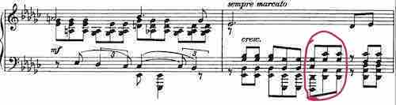
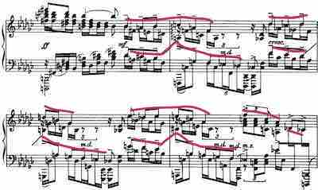
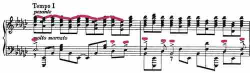

July 7, 2017
By Martin Kaptein
Analysis of Sergei Rachmaninoff's Etude-Tableaux Op. 39 No. 5
Before I begin
This blog post will be dedicated to Sergei Rachmaninoff and his Etude Tableaux Op.39 No.5. I recommend to listen to it here (performance by Ashkenazy), before you read this analysis.
Also, this analysis is quite subjective and might contain information which is not entirely correct (just a disclaimer).
Maestro Sergei Rachmaninoff
Introduction
The Etude - Tableaux Op. 39 No.5 (in E flat minor) is a virtuoso etude by Sergei Rachmaninoff, from the second collection of his Etudes Tableaux (the first being Op. 33), written in 1917. It combines an harmonically very dense texture with very lyrical, sometimes Scriabin-esque melodies.
Both, op. 33 and op. 39 contain nine etudes.
The title “Etude-Tableaux” translates to “picture etude”, which points to a programmatic content of the etudes.
However, Rachmaninoff did not reveal any program, to be associated with the music. His words are:
“I do not believe in the artist disclosing too much of his images. Let them paint for themselves what it most suggests”
Still, he gave away some of the “pictures” to Ottorino Resphighi, who orchestrated some of the etudes tableaux.
Combined with the high level of difficulty associated with the Etudes-Tableaux, the possibility is considerable that Rachmaninoff was inspired by the Transcendental Etudes by Franz Liszt, which offer similar characteristics to those stated above.
The Etudes Tableaux (op. 33 or op. 39) are unified in a way which makes them, when performed together, very effective (for a concert). This is because of melodic connection, such as the reference to the Dies Irae (such as in Op. 39 No. 2 in the left hand), and the differences in character (i.e. pictures).
This process of unification is also the case in the, earlier composed, “Moment musicaux” Op.16 and can also be compared to the Transcendental Etudes by Liszt or the Symphonic Etudes by Robert Schumann.
Analysis
The Etude Tableaux Op.39 No.5 in E flat minor is the largest etude of Op.39 and has an ABA Form. However, on closer examination it appears to actually resemble a miniature Sonata Form.
The etude is marked Appassionato and features a very dense texture with long melodic lines, which need to be brought up and phrased.
The first theme appears from Bar 1 until Bar 12 and is marked molto marcato. It has a very lyrical melody and is very song-like. At the same time it features and accompaniment of repeated chords in triplets. Until Bar 12 the harmony stays basically the same (E flat minor with small deviations).
After Bar 11 starts an elaboration of the first theme which is introduced by a D flat 7 (11) chord in Bar 12. This chord is very special as it will also appear in the coda (3rd last bar).
Generally speaking, Rachmaninoff makes frequent use of a Dom 7 chord (with different options or suspension functions) on the (flattened) 7th grade in minor, such as in Op. 39 No. 8 (solving thereafter to the 1st grade).

The Dflat 7 (11) chord, marking the start of the harmonic developement of the first theme
After Bar 12 there is a lot of chromatic and diatonic movement (base in bar 12 and following as well as inner voices in Bar 18 and following). This movement leads to the first climax in Bar 22. After Bar 22 there is a transition to the second theme, which starts in Bar 26.
The second theme is very contrasting to the first. It has a much quieter melody, which is much more contrapuntal (as several voices appear at the same time) and is accompanied by widespread arpeggiated chords in the left hand.
In Bar 33 and following there is, again, diatonic movement which gradually increases its intensity. For example, in Bar 26 the second theme starts in a B flat major/minor environment (which is the dominant of E flat), in Bar 33 there appears C major, in Bar 35 D major, Bar 37 E major etc.
This tonal (sometimes even modal) movement creates a lot of different sound colours, which makes it, in a way, very similar to Scriabin.
In Bar 43 and following appears an elaboration, in which Rachmaninoff puts the first and second theme together: While the first theme (slightly altered) appears in the top voice, in the base appears a descending whole - tone scale (hexatonic scale). Then this element is sequenced several times, leading to the second climax in Bar 47. After that there is a transition (Bar 51) to the recapitulation (which starts in Bar 54).

Combination of first theme, second theme and hexatonic scale
The recapitulation features, again, the first theme, with a different accompaniment. The chord pattern in the right hand hides a reference to the dies irae (Gregorian chant), which I mentioned in the beginning. This leads to the main climatic point of the piece in Bar 61.

The Recapitulation and the reference to Dies Irae
After that there is a transition to the second theme, which, this time, appears in E - flat minor/major in Bar 74.
From this point on it stays in a E flat major and minor environment, except Bar 81 in which a D flat 7 (9, 13) chord appears. The thin texture of the coda leads to a quiet ending in E-flat major (Picardy third).
Form
Op. 39 No. 5 can also be interpreted in a miniature Sonata Form:
- Exposition: Bars 1 - 33
- Development: Bars 33 - 54
- Recapitulation: 54 - end
Respectively, the Exposition features the first theme in E-flat minor, its harmonic and motific elaboration and the second theme in the Dominant (B-flat).
The Development features the elaboration of the second theme and the merging of elements from the first and second theme. During the transition to the Recapitulation even a Dominantfläche (pedal point on the Dominant) takes place, which is frequently associated with classical sonatas by Mozart and (early) Beethoven.
The Recapitulation features again the main theme (E flat minor) with the motif deviated from the dies irae in the right hand, the main climax and the second theme, this time, in E flat minor (or major respectively). This, finally, transitions in to the coda.
Hence, this etude has a structure, which is very similar to a classical sonata, but in a very compact form.
Conclusion
The Etude-Tableaux op 39 no 5 is a very challenging piece, both technically, musically and emotionally.
It has, alongside the other etudes, a very deep meaning, which is, ultimately, not depictable by words. In my opinion it gives, in a sense, very deep insight into the human soul.
Maybe op.39 no.5 and the other etudes too, are meant to show certain states of mind or emotions. At this point, it is worth noting that, in his youth, Rachmaninoff did suffer from depression and his etudes-tableaux could be an emotional mirror to the past.
Perhaps it is a good thing that Rachmaninoff did not supply a programme and leaves the interpretation to the performer and listener.
Also, out of all etudes tableaux, op.39 no.5 is the, perhaps, most harmonically elaborate piece, featuring complex harmonic movement.
Actually, this chromatic, diatonic and modal harmonic movement, so clearly present, especially in this etude, distantly reminds me of the Vocalise op. 34 no. 14 (click here to listen to it), which is another one of the many, fantastic, compositions of Sergei Rachmaninoff.